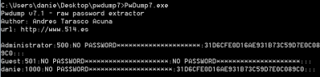
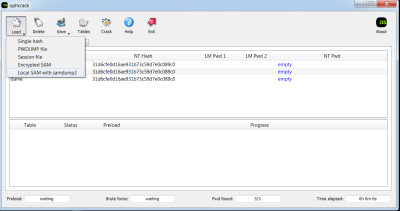

Locally(phisical access)
Locally
• running
system: a local
administrator account is
required to download hashes from the memory.
we have to load a password dumping program in the remote
machine:
▪ pwdump
-
http://www.foofus.net/fizzgig/pwdump/ -
http://www.tarasco.org/security/pwdump_7/  ▪ fgdump
http://foofus.net/goons/fizzgig/fgdump/ ▪ ophcrack
http://ophcrack.sourceforge.net/  ▪ l0phtCrack http://www.l0phtcrack.com/
• off-line system: passwords
hashes are decrypted in the file SAM. The key to decrypt SAM is stored in SYSTEM file.
If we can boot any
operating system on the local machine, we can always dump files like SAM, SYSTEM on a usb and then crack them
later
◇ dump hash: ▪ use
Kali Linux Live
CD and boot it, we have to mount the partition where Windows is installed and then we have to move in
it:
mkdir /mnt/sda1
mount -t ntfs /dev/sda1 /mnt/sda1
cd /mnt/sda1/WINDOWS/system32/config/
retrive hashes with bkhive and sampdump2 in conjunction
bkhive system syskey.txt #in Windows 7 use: bkhive SYSTEM syskey.txt
samdump2 SAM syskey.txt > ourhashdump.txt
cat ourhashdump.txt
▪ use
Ophcrack Live CD and boot it, this will
immediately retrieve the password hashes and prompt them to you.
◇ overwrite hash: We
have to change the SAM file content with a tool like
chntpw
installed on a Live CD. To do that see
HERE
◇ bypass Windows login: Kon-Boot is a software which allows to change contents of a Linux and
Windows kernel while booting
It is an application which bypass the authentication without overwriting the old
password
http://www.piotrbania.com/all/kon-boot/